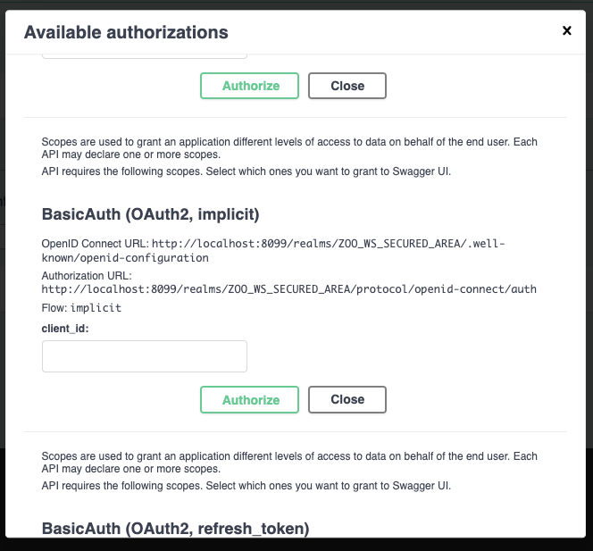

Using OpenID Connect 1.0 to authenticate¶
Introduction¶
In this section, your obectif is to use OpenID Connect 1.0 to authenticate your user. So, you will include keycloack in your Docker compose environment, configure it, update the ZOO-Kernel OpenAPI configuration file, and create a demo process responsible for parsing the JWT bearer.
Add keycloack service to your environment¶
First, you will update the docker-compose.yaml file in the ZPGIT directory and add the following content.
keycloack:
image: quay.io/keycloak/keycloak:20.0.3
command:
- start-dev
- --features admin-fine-grained-authz
environment:
KEYCLOAK_ADMIN_PASSWORD: admin
KEYCLOAK_ADMIN: admin
ports:
- "8099:8080"
This will add a keycloack to your environment, using the default dev setting (start-dev, not production ready).
Once, you have modified the docker-compose.yaml file, run the command below.
docker-compose down && docker-compose up -d
The keycloack server may take some time to start. After it correctly started, you should be able to access the keycloack’s admin interface). Please, log in with admin/admin credential as defined in the docker-compose.yaml file.
Create a dedicated realm¶
Using the top left select list, displaying per default “master”, you can create a realm. Use ZOO_WS_SECURED_AREA for the realm name, and click on create.

Create a client¶
Once the realm creation is over, you will add a client with the following Client ID: ZOO-Secured-Client.
{kind=link}
On the second configuration page, activate the Implicit flow, then click on save.
{kind=link}
In the settings pannel, set the following values (press save to save the settings):
Valid redirect URIs:
http://localhost/swagger-ui/oapip/*Web origins:
http://localhost/swagger-ui/oapip/

Grant access to users¶
To conclude the setup, you should decide if you want to use external identity providers (such as GitHub), create a user within keycloack, or both. If you decide to create a user from keycloack, remember to set a password using the dedicated tab from the User creation form.
ZOO-Kernel configuration update¶
You can now edit the osecurity section from the oas.cfg file to activate the OpenIdConnect option.
[osecurity]
name=BasicAuth
type=openIdConnect
openIdConnectUrl=http://localhost:8099/realms/ZOO_WS_SECURED_AREA/.well-known/openid-configuration
Demonstration filter¶
You will create a security_service.py in the /usr/lib/cgi-bin directory (of the zookernel container) containing the following Python code snippet
import zoo
import jwt
import sys
import json
def securityIn(main_conf,inputs,outputs):
hasAuth=False
for i in main_conf["renv"].keys():
if i.count("HTTP_AUTHORIZATION")>0:
jsonObj=jwt.decode(main_conf["renv"][i].split(' ')[1], options={"verify_signature": False})
hasAuth=True
if "preferred_username" in jsonObj.keys():
main_conf["auth_env"]={"user": jsonObj["preferred_username"]}
if "email" in jsonObj.keys():
main_conf["auth_env"]["email"]=jsonObj["email"]
if "auth_env" in main_conf:
print(main_conf["auth_env"],file=sys.stderr)
if hasAuth or main_conf["lenv"]["secured_url"]=="false":
return zoo.SERVICE_SUCCEEDED
else:
if "headers" in main_conf:
main_conf["headers"]["status"]="403 Forbidden"
else:
main_conf["headers"]={"status":"403 Forbidden"}
main_conf["lenv"]["code"]="NotAllowed"
main_conf["lenv"]["message"]="Unable to ensure that you are allowed to access the resource."
return zoo.SERVICE_FAILED
Then, you update the securityIn.zcfg to have the following parameter values:
serviceType = Python
serviceProvider = security_service
You can run the command below from the zookernel container to get this done.
sed "s#serviceType = C#serviceType = Python#g;s#serviceProvider = security_service.zo#serviceProvider = security_service#g" -i /usr/lib/cgi-bin/securityIn.zcfg
Note
We decided not to update the name in the [oosecurity] section not to require any further updates of other parts of the oas.cfg, such as the secured key of the [processes/HelloPy/execution] section. In the same way, rather than defining another process name, we kept using securityIn.
Now, go back to the [link with rel service-doc](http://localhost/ogc-api/api.html). You should now be able to run the HelloPy service after authenticating using OpenID Connect.
{kind=link}
Enter the client id you defined earlier (ZOO-Secured-Client), then press the authenticate button. Your browser should load another page to let you authenticate. Once logged in, you should then come back to the initial page.
Conclusion¶
In this section, you have embedded keycloack within your Docker compose environment and get ti configured. You have also learnt how to setup openIdConnect authentication from the ZOO-Kernel configuration file. If the demo process implemented is very trivial, it illustrates perfectly how security can be embedded within the OpenAPI exposed by the ZOO-Project.